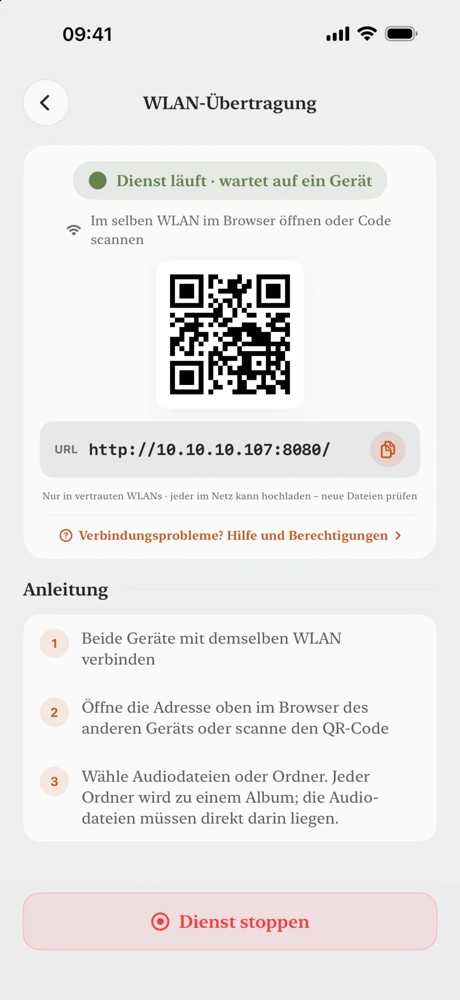
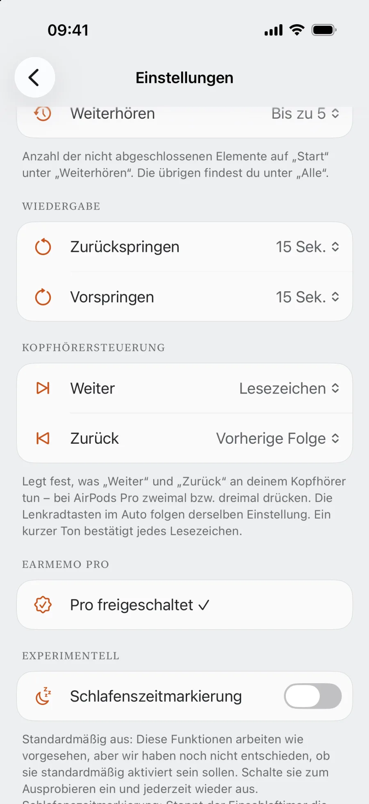

EarMemo › ARD-Hörspiele offline
ARD-Hörspiele offline auf dem iPhone hören
Öffne die Folge auf ardsounds.de (die frühere ARD Audiothek), tippe auf ⋮ und dann auf Herunterladen. Du bekommst eine MP3, die in Dateien → Downloads landet. In einen Offline-Player wie EarMemo importiert, spielt sie ohne Netz, merkt sich die Stelle und bleibt auf deinem iPhone, auch wenn die Folge online ausläuft.
Die Hörspiele von ARD, BR, WDR, NDR, SWR und den anderen Landesrundfunkanstalten stehen gesammelt in ARD Sounds – so heißt die ARD Audiothek inzwischen; ardaudiothek.de leitet dorthin weiter. Viele Folgen lassen sich als MP3 herunterladen, aber nicht alle, und online bleiben sie oft nur befristet.
Die MP3 herunterladen
- Öffne die Folge in Safari auf ardsounds.de, über die Rubrik Hörspiel oder die Suche.
- Tippe neben Abspielen auf ⋮ (das Menü Mehr).
- Tippe auf Herunterladen und bestätige den Download. Die Datei ist eine MP3.
- Öffne Dateien → Downloads. Safari speichert dort – in iCloud Drive, außer du hast unter Einstellungen → Safari → Downloads (ab iOS 18: Einstellungen → Apps → Safari → Downloads) Auf meinem iPhone gewählt.
Kein Herunterladen im Menü? Dann ist die Folge aus Rechtegründen nur zum Streamen freigegeben. Das gilt für die Website wie für andere Apps; du kannst sie dann nur in ARD Sounds hören.
In EarMemo importieren
- Aus der Dateien-App: In EarMemo auf ⋯ → Audio/Video importieren tippen, Downloads öffnen und die Folgen auswählen. Für einen Mehrteiler alle Teile markieren oder sie vorher in einen Ordner legen und Ordner importieren wählen – dann bleibt die Serie ein Album.
- Oder vom Computer über WLAN: Viele Folgen am Rechner laden, in EarMemo ⋯ → WLAN-Übertragung öffnen, die angezeigte Adresse im Browser am Computer aufrufen und den Ordner hineinziehen. Die Übertragung bleibt im lokalen Netzwerk. Alle Wege aufs iPhone.

Hören: Tempo, Stelle, Lesezeichen
- Tempo von 0,5× bis 3,5×, ohne Mickymaus-Stimme.
- Die Stelle wird sekundengenau gemerkt – in jeder Folge, auch wenn du zwischendurch etwas anderes hörst.
- Lesezeichen per Kopfhörer: Unter Einstellungen → Kopfhörersteuerung Weiter auf Lesezeichen stellen. Bei AirPods Pro zweimal drücken; ein kurzer Ton bestätigt. Später einen Satz dazuschreiben, Tippen spielt die Stelle wieder ab.
- Schlaftimer mit Countdown auf dem Sperrbildschirm – fürs Einschlafen mit Krimi.

Was du mit den Dateien darfst
Die MP3 ist für dein privates Hören gedacht. Weitergeben oder veröffentlichen darfst du sie nicht; die Rechte liegen bei den Sendern und Urhebern.
Offizielle Seiten, auf denen diese Anleitung beruht
Wann EarMemo nicht die richtige Wahl ist
- Du hörst ohnehin nur in der ARD-Sounds-App und hast dort Netz. Dann brauchst du keine Datei. EarMemo lohnt sich, wenn du die MP3 behalten, mit anderen Quellen mischen oder Lesezeichen per Kopfhörer setzen willst.
- Die Folge hat kein Herunterladen. Dann gibt es keine Datei, und EarMemo kann sie nicht abspielen.
- Du willst neue Folgen automatisch bekommen. EarMemo abonniert keine Feeds; dafür ist eine Podcast-App da.
Häufige Fragen
Kann man ARD-Hörspiele herunterladen?
Viele ja. In ARD Sounds (früher ARD Audiothek) auf der Folgenseite auf ⋮ und dann Herunterladen tippen. Fehlt der Eintrag, ist die Folge nur zum Streamen freigegeben.
Wo ist die ARD Audiothek geblieben?
Sie heißt jetzt ARD Sounds. ardaudiothek.de leitet auf ardsounds.de weiter; die Hörspiele sind dort in der Rubrik Hörspiel.
Bleibt die heruntergeladene MP3, wenn die Folge online ausläuft?
Ja. Die Datei liegt dann in deiner Dateien-App bzw. in EarMemo auf dem iPhone, unabhängig davon, wie lange die Folge online verfügbar ist.
Wie halte ich einen Mehrteiler zusammen?
Alle Teile in einen Ordner legen und in EarMemo Ordner importieren wählen. Der Ordner wird ein Album, die Teile sind nach Dateinamen sortiert.
Ist EarMemo dafür kostenlos?
Kostenlos laden, und das Gratis-Kontingent läuft nicht ab: ein Album gleichzeitig hören, insgesamt 10 verschiedene Titel ausprobieren, unbegrenzt Zeitmarken setzen und 5 davon mit Text versehen. Import, Fortsetzen, Tempo und Schlaftimer sind frei. Für lange Serien gibt es EarMemo Pro als einmaligen Kauf ohne Abo.
Mit deinen eigenen Dateien ausprobieren
EarMemo ist kostenlos und innerhalb des Gratis-Kontingents dauerhaft nutzbar. Mit einem einmaligen Kauf schaltest du EarMemo Pro frei. Kein Abo, keine Werbung, kein Konto.